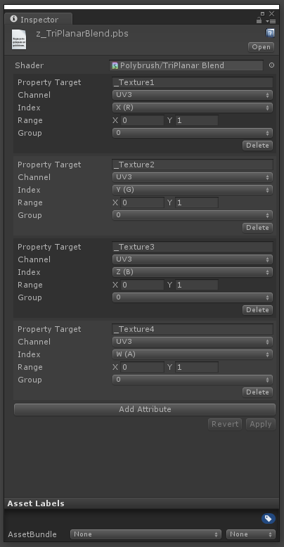
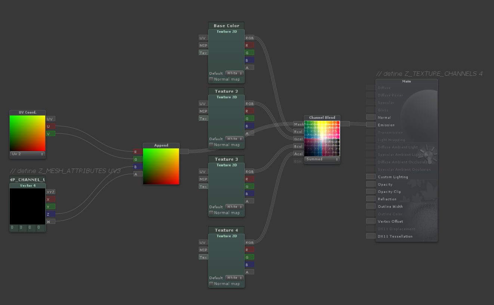
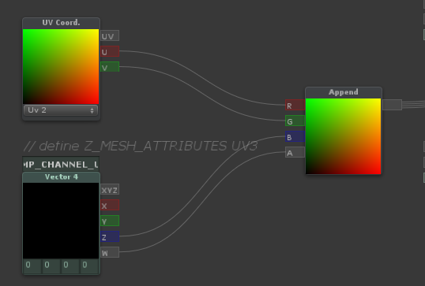

Constructing a shader that is compatible with Polybrush's Texture Paint Mode is very simple. You can either write your code by hand, or use ShaderForge.
Polybrush will pass texture blending information to the shader using some combination of mesh attributes (ex; via color, tangent, uv0, uv2, etc).
There are two methods for passing information about how a shader uses mesh data:
- By defining in shader code which mesh channels to look for data in (UV, Color, etc)
- By creating a separate metadata file that stores per-attribute information
If your shader just wants to map Color.R to _Texture1, Color.G to _Texture2, etc go with the first option. If your shader has more complex interactions with attribute information, use the metadata method.
Defining Channel Data in Shader Code (Legacy)
If your shader simply blends between textures using normalized values set in a mesh array, you can use this method to make the shader compatible with Polybrush.
- Somewhere in the shader you must define how many textures are used:
define Z_TEXTURE_CHANNELS 8 - Somewhere in the shader the mesh attributes used must be defined:
define Z_MESH_ATTRIBUTES COLOR UV UV3The order in which the mesh attributes are defined also tells Polybrush whichTextureinputs belong to which attribute. For example,define Z_MESH_ATTRIBUTES UV0 UV3 UV4tells Polybrush that the first 4 textures should map to the 4 values in each vertexuv0property, the next 4 textures belong touv3, and so on.
The available mesh attributes values are UV0, UV2, UV3, UV4, COLOR, TANGENT. Each value should only be used at most once.
Polybrush accesses these statements by searching the shader source, so they may be either provided in a comment or defined.
#define Z_TEXTURE_CHANNELS 8
// is the same as
// define Z_TEXTURE_CHANNELS 8
Here's what this could look like in shader code (boring bits omitted)
Properties
{
_MainTex ("Texture", 2D) = "white" {}
_Texture1 ("Texture 1", 2D) = "white" {}
_Texture2 ("Texture 2", 2D) = "white" {}
_Texture3 ("Texture 3", 2D) = "white" {}
_Texture4 ("Texture 4", 2D) = "white" {}
_Texture5 ("Texture 5", 2D) = "white" {}
}
SubShader
{
Pass
{
// Tell Polybrush that this shader supports 6 texture channels (Texture, Texture 1, so on)
#define Z_TEXTURE_CHANNELS 6
// Tells Polybrush that the shader expects data in the uv3 and uv4 channels
// (4 components in uv3, 2 in uv4)
#define Z_MESH_ATTRIBUTES UV3 UV4
struct appdata
{
// local position
float4 vertex : POSITION;
// the texture coordinate
float2 uv : TEXCOORD0;
// float2 uv1 : TEXCOORD1; // not used (this would be mesh.uv2)
// mesh.uv3 data
float4 uv2 : TEXCOORD2;
// mesh.uv4 data
float4 uv3 : TEXCOORD3;
}
etc...
In this example Polybrush will show 6 textures in the palette and map each texture's strength to mesh.uv.xyzw and mesh.uv3.xy respectively.
Check out the shader z_UnlitTextureBlend.shader for a simple working example.
MetaData File
Polybrush can store fine-grained instructions for interpreting mesh data in the form of a metadata file. A metadata file is composed of a shader reference (pointing to the shader it describes) and a list of z_AttributeLayout entries. Each entry contains all the necessary information about how a value is used in a shader for Polybrush to work with.
When Polybrush loads a material into Texture Mode it will first search for an accompanying ShaderName.pbs.json file, then try to fall back on the Legacy method (searching for Z_DEFINE_MESH_ATTRIBUTES in shader source).
To create a new Polybrush metadata file:
- Select the shader you want to work with.
- Right click (Option click Mac) the Shader and select
Create/Polybrush/Shader MetaData.
By default Polybrush creates the new file using the name of the selected shader, placing it in the same directory. This is where Polybrush will look for metadata. To specify a different name or path, in the shader add the following comment:
// Z_SHADER_METADATA MyMetaDataFolder/SomeOtherName.pbs.json
The path provided after Z_SHADER_METADATA is relative to the directory of the shader.
Mercifully, you do not have to write this metadata by hand (though you can if you'd like to).

-
Property Target - The shader property that this attribute will affect.
More complex interactions may not map to a single property, so this field may be either the name of a property, or a simple description.
If the string provided to this field matches a
2Dproperty in the shader, Polybrush will load the material's texture matching this property name. If it does not match a texture property, this string will be shown as the preview in the texture selection well. -
Channel - The mesh channel that this attribute will draw from.
- Index - Which component of the channel this attribute receives data from.
- Range - The range (x is min, y is max) that this attribute will operate in.
- Group - Attributes with matching groups will affect one another when applied. Use
No Maskto mark that this attribute will always operate independently.
When a texture is selected in Texture Mode, Polybrush sets a new target value for each attribute matching the selected attributes group. The selected attribute has its target value set to Range.max, while all other attributes in the group are set to their Range.min value. Polybrush then applies this new mix of attribute values to the mesh, taking into account brush strength and falloff.
Say you have a shader with 5 textures; a base texture and 4 blend textures. This shader reads texture blending information from the mesh.color channel. The final fragment color is built using the following formula:
// sample the texture
fixed4 col1 = tex2D(_MainTex, i.uv);
fixed4 col2 = tex2D(_Texture1, i.uv) * i.color.y;
fixed4 col3 = tex2D(_Texture2, i.uv) * i.color.z;
fixed4 col4 = tex2D(_Texture3, i.uv) * i.color.w;
float snowMix = i.color.x * ((cnoise(i.uv * _SnowTiling) + 1) * .5);
fixed4 final_color = lerp(lerp(lerp(col1, col2, i.color.y), col3, i.color.z), col4, i.color.w);
final_color = lerp(final_color, _SnowColor, snowMix);
In this case you'll want Polybrush to show 5 entries in the Texture Palette: 4 textures and "Snow". This means the metadata needs 5 entries.
All the texture properties are related, meaning when one value is set to maximum strength the others should be set to minimum strength. To do this, create each for these attributes with the same group.
The attribute values are set like so:
| Property | Channel | Component | Range | Group |
|---|---|---|---|---|
| _MainTex | Color | G | { 1, 0 } | 0 |
| _Texture1 | Color | G | { 0, 1 } | 0 |
| _Texture2 | Color | B | { 0, 1 } | 0 |
| _Texture3 | Color | A | { 0, 1 } | 0 |
| Snow | Color | R | { 0, 1 } | No Mask |
You may have noticed that _MainTex and _Texture1 share a common channel. The reason is that _MainTex is special in that it does not map it's strength to a single attribute, rather, its strength is determined by the lack of strength in the other texture channels.
To accomplish this, we set _MainTex to use the Color channel and register it to the G field. However, instead of setting the strength from 0 to 1 it is from 1 to 0. That means when Polybrush applies _MainTex at full strength the Color.G field will be 0, and the Color.B and Color.A fields will also be 0 (since their min values are 0).
Snow is also a special case. Since it is a generated effect in the shader it does not map to a texture property. Polybrush will display the name "Snow" for this value. By setting the group to "No Mask" we're telling Polybrush that this value should be modified independent of all other attributes. That means when you're applying Snow at full strength all other attributes will remain unaffected.
With ShaderForge
Post-Processing
Shaders built with ShaderForge require some additional work to be compatible with Polybrush. Fortunately through some post-processing this process is extremely simple. In short, Polybrush will automatically listen for changes to any shader with the suffix _SfSrc, then make some changes to the source code and compile a new shader right next to it (omitting the suffix so you aren't confused).
For example, if you have MyNeatoShaderForgeShader_SfSrc.shader it will be compiled and renamed to MyNeatoShaderForgeShader.shader. Use this shader in your game (not the suffixed one!).
Similar to writing shader code, you need to define how many textures are used and what mesh attributes data is provided in. Usually this means as a comment on one of the nodes (right click and select "Edit Comment").
It is required that all ShaderForge shaders have the following two lines present in node comments:
-
define Z_TEXTURE_CHANNELS 8
Where the last number is the number of textures used.
-
define Z_MESH_ATTRIBUTES UV3 UV4
Where the values following Z_MESH_ATTRIBUTES is the mesh properties that are accessed. Available values are
UV0, UV2, UV3, UV4, COLOR, TANGENT.
In addition, shaders must be named with the suffix _SfSrc (ex, MySimpleBlendShader_SfSrc.shader). This lets Polybrush know that this shader requires some post-processing.
The Shader Settings / Path must be set to Hidden (ex, Hidden/MyShader). Polybrush will automatically detect this and remove the Hidden part from the path when compiling the new shader. If you're having issues with black triangles on a mesh, check that the shader has Hidden/ in it's path.
Here is a basic 4 texture blend shader in ShaderForge. This shader blends the 4 textures using mesh.uv3 as input. Note the comments Z_TEXTURE_CHANNELS 4 on the Main node and Z_MESH_ATTRIBUTES UV3 on the Vector4 Property node.

Accessing Vector4 UVs
Due to a limitation in ShaderForge, accessing UV data as Vector4 types requires some extra work. To read a UV as a fixed4 in graph language, first
- Create a
UV Coord.node matching the channel you would like to read blend information from. - Create a
Vector4 Propertynode namedTEMP_CHANNEL_UV0(orTEMP_CHANNEL_UV1, orTEMP_CHANNEL_UV2etc, where the final number matches the channel specified in theUV Coord.node). - Create an
Appendnode and connect theuv.u,uv.v,TEMP_CHANNEL_0.zandTEMP_CHANNEL_0.w. It is important that you not swizzle theUV Coord.input. - Use the
Appendoutput as though it was theuv0channel.

In shader code, the texture coordinates are always zero indexed, where in Unity you may be used to seeing the uv0 channel called simply uv and the uv1 channel called mesh.uv2.
If you're confused, here's a graph mapping the mesh property to it's shader counterpart.
| Mesh | Shader | Vector4 Node Name |
|---|---|---|
mesh.uv or mesh.uv2 |
uv0 |
TEMP_CHANNEL_UV0 |
mesh.uv2 |
uv1 |
TEMP_CHANNEL_UV1 |
mesh.uv3 |
uv2 |
TEMP_CHANNEL_UV2 |
mesh.uv4 |
uv3 |
TEMP_CHANNEL_UV3 |
F.A.Q.
Texture Palette Doesn't Match What's Painted
Make sure that the properties are listed in the correct order (they will be matched sequentially to the Z_MESH_ATTRIBUTES list).